Infection
Some zombies infect you when they hit you. The infection grows by itself, from 1 to 100, and gets worse at each stage. At 100 you are Turned, and if you die while you are Turning or Turned, you come back as a zombie.
The 4 stages
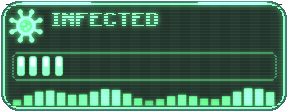
Now and then you cough (a small green cloud). Nothing else yet: the best time to cure it.
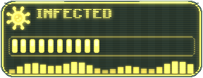
You are weak all the time and get poisoned for 2 s every 12 s.
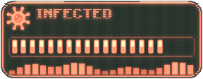
Weakness II and slowness. Every 8 s your sight goes dark or blind for a moment and you get poisoned.
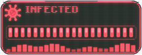
Wither and slowness II. Cure it now: if you die, you come back as a zombie.
Every bite that infects adds to the level (15 for most zombies). Then the level goes up by 1 every 3 seconds, 20 per minute: from a first bite to Turning takes under 3 minutes. A bandage stops it for 45 seconds. Die while Turning or Turned and you rise as a zombie: One-Armed Zombie, Farmer, Crawler.
How to treat it

Cures the infection completely and gives 6 s of regeneration.

Full health, removes poison, wither, nausea, slowness and weakness, and the infection goes down by 30.

+6 health and the infection is paused for 45 s.

Infection -5, and bites cannot infect you for 60 s.
Also good to know
The plague cloud of a burst Explosive Virus Barrel adds 15 to everyone within 3 blocks.
When a Bloater bursts next to you, 17.5% chance to be infected (+10).
The Biker set halves the chance that a bite infects you; the Hazmat set divides it by 4.
The monitor
A small holographic monitor shows up next to your left hand for 5 seconds every minute while you are infected, and right away after a bite or a new stage. The bar has 20 segments (one per 5 levels); the newest one blinks. After a treatment it shows what the treatment did for 3 seconds. It never takes the place of a totem: with a totem in your off hand, the infection shows in the action bar instead.
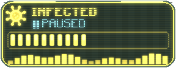
After a bandage the monitor says PAUSED. After a treatment:
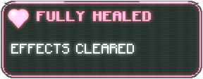
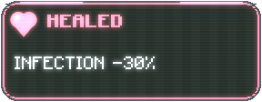
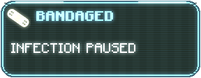
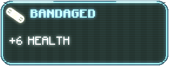
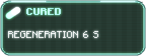
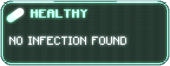
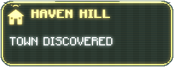
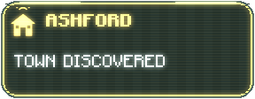
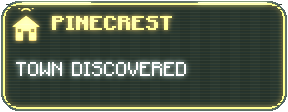
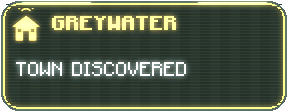
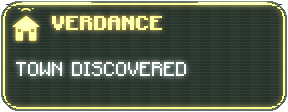
Zombies that infect
Chance per hit, and how much one bite adds.
 The Blind24.5% per hit · +20
The Blind24.5% per hit · +20 Mutant Brute21% per hit · +22
Mutant Brute21% per hit · +22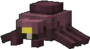
Parasite21% per hit · +8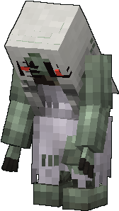
The Weeper17.5% per hit · +15 Angry Chef14% per hit · +15
Angry Chef14% per hit · +15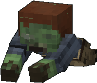
Crawler12.6% per hit · +15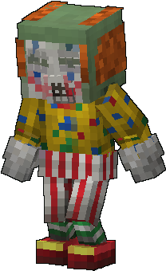
Clown10.5% per hit · +15 Zombie Hound10.5% per hit · +10
Zombie Hound10.5% per hit · +10 Three-Headed Zombie9.8% per hit · +15
Three-Headed Zombie9.8% per hit · +15 Angry Reader7% per hit · +15
Angry Reader7% per hit · +15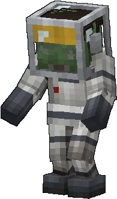
Astronaut Zombie7% per hit · +15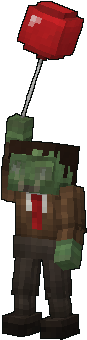
Balloon Zombie7% per hit · +15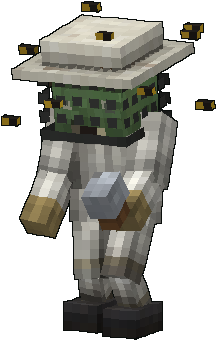
Beekeeper7% per hit · +15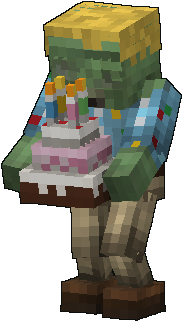
Cake Thrower7% per hit · +15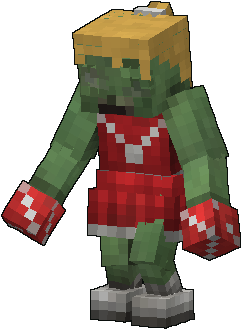
Cheerleader7% per hit · +15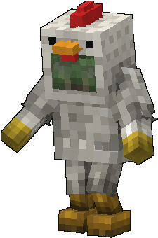
Chicken Mascot7% per hit · +15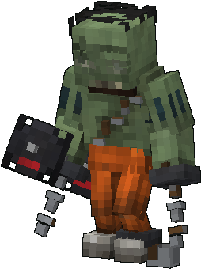
Convict Brute7% per hit · +15 Disco Zombie7% per hit · +15
Disco Zombie7% per hit · +15 Farmer7% per hit · +15
Farmer7% per hit · +15 Firefighter Zombie7% per hit · +15
Firefighter Zombie7% per hit · +15 Fisherman7% per hit · +15
Fisherman7% per hit · +15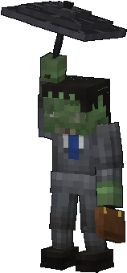
Flying Accountant7% per hit · +15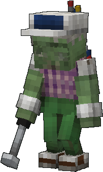
Golfer7% per hit · +15 Ice Cream Man7% per hit · +15
Ice Cream Man7% per hit · +15 Ladder Zombie7% per hit · +15
Ladder Zombie7% per hit · +15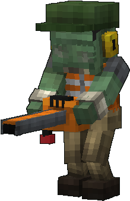
Leaf Blower7% per hit · +15 Linebacker7% per hit · +15
Linebacker7% per hit · +15 Lumberjack7% per hit · +15
Lumberjack7% per hit · +15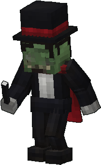
Magician7% per hit · +15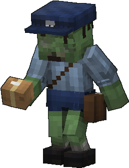
Mailman7% per hit · +15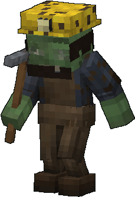
Miner Zombie7% per hit · +15 Mister Lanky7% per hit · +15
Mister Lanky7% per hit · +15 Mother Bloater7% per hit · +15
Mother Bloater7% per hit · +15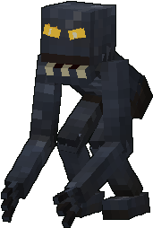
Night Creeper7% per hit · +15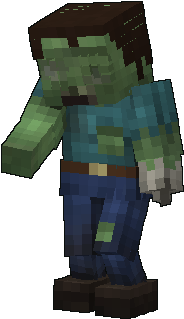
One-Armed Zombie7% per hit · +15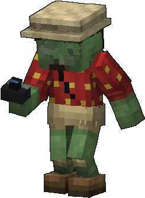
Photographer7% per hit · +15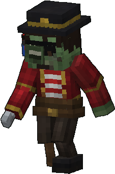
Pirate7% per hit · +15 Pole Vaulter7% per hit · +15
Pole Vaulter7% per hit · +15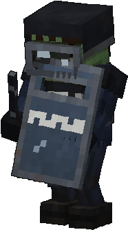
Riot Cop7% per hit · +15 Rocketeer7% per hit · +15
Rocketeer7% per hit · +15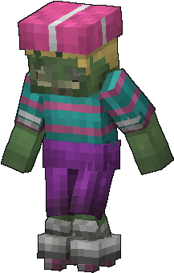
Roller Zombie7% per hit · +15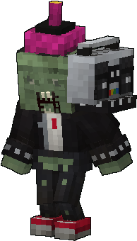
Screamer7% per hit · +15 Snorkel Zombie7% per hit · +15
Snorkel Zombie7% per hit · +15 Soldier Brute7% per hit · +15
Soldier Brute7% per hit · +15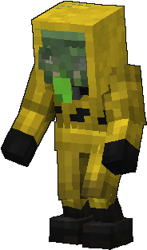
Spitter7% per hit · +15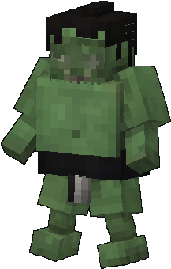
Sumo7% per hit · +15 The Demolisher7% per hit · +15
The Demolisher7% per hit · +15 The Jockey7% per hit · +15
The Jockey7% per hit · +15 The Lawnmower Man7% per hit · +15
The Lawnmower Man7% per hit · +15 The Live Wire7% per hit · +15
The Live Wire7% per hit · +15 The Mime7% per hit · +15
The Mime7% per hit · +15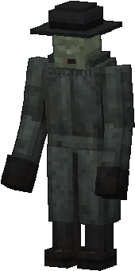
The Stalker7% per hit · +15 The Warden7% per hit · +15
The Warden7% per hit · +15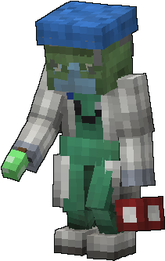
Zombie Doctor7% per hit · +15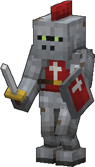
Zombie Knight7% per hit · +15 Zombie Tower7% per hit · +15
Zombie Tower7% per hit · +15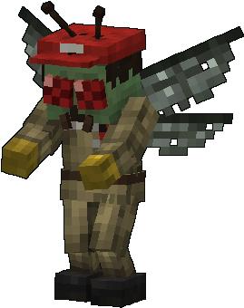
Winged Zombie4.2% per hit · +15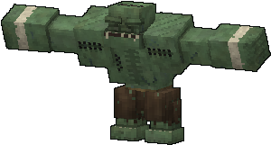
The Tank3.5% per hit · +15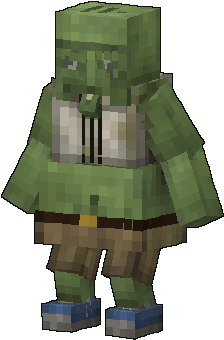
Bloater2.8% per hit · +15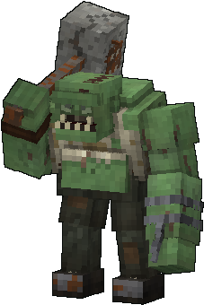
Hammer Tank2.8% per hit · +15 Santa Bloater2.8% per hit · +15
Santa Bloater2.8% per hit · +15